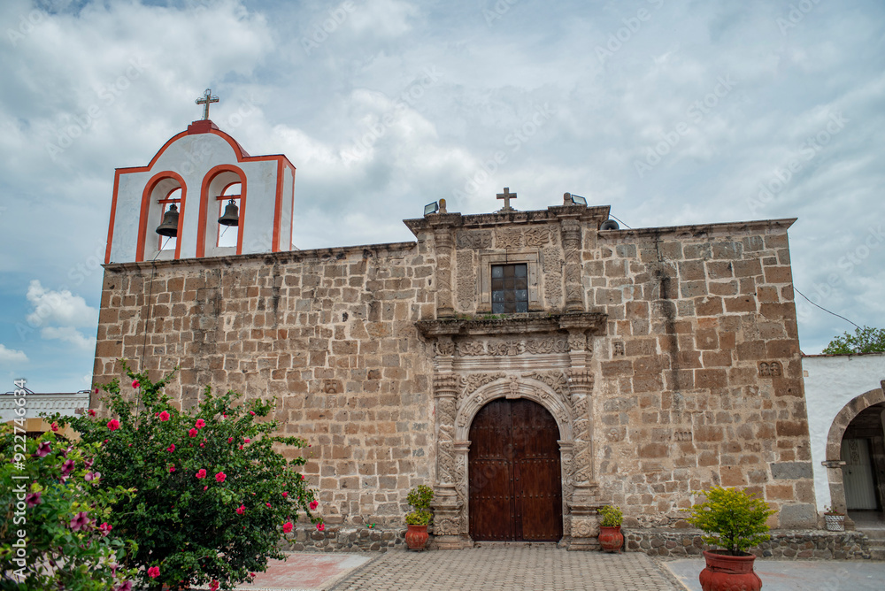

Fundación: Siglo XVI
Población aproximada: 4,000 habitantes
Ubicación: Zona sur-oriente de la Ribera de Colores
Principal atractivo: Tradiciones culturales, paisajes rurales y cercanía con la laguna
Fiesta tradicional: Fiesta patronal de San Lucas Evangelista

San Lucas Evangelista destaca por ser una comunidad donde la historia, las tradiciones y el trabajo de sus habitantes han dado forma a una identidad propia dentro de la ribera. Su origen también se remonta a la época colonial, cuando comenzaron a establecerse las comunidades alrededor de la Laguna de Cajititlán como parte del crecimiento de la región.
Actualmente forma parte del proyecto turístico Ribera de Colores, impulsando el desarrollo sostenible y la promoción de sus atractivos naturales y culturales. Sus calles, paisajes y cercanía con la laguna convierten a este pueblo en un excelente punto para conocer una faceta más tranquila y auténtica de la ribera.